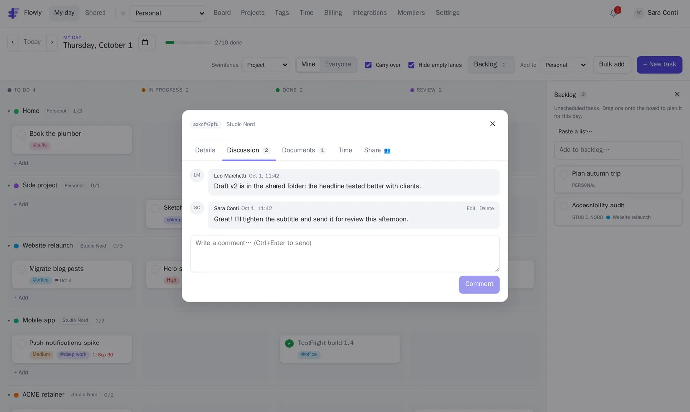
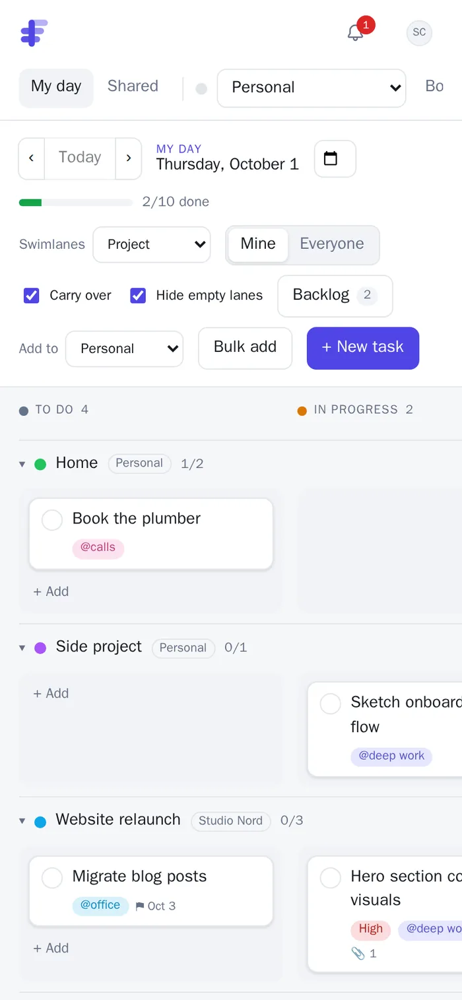

Swimlanes by anything
Group today's tasks by project, workspace, person, priority or your own tags, like @calls or @deep work. Drag a card to another lane and it moves there for real.
Daily planning for people with too many projects
Flowly gathers the tasks from all your projects and teams into one board for today, grouped into swimlanes by project, context or anything you tag. Drag, finish, carry over. Tomorrow starts clean.

Not another list per project. One view of what matters today, from everywhere.
Group today's tasks by project, workspace, person, priority or your own tags, like @calls or @deep work. Drag a card to another lane and it moves there for real.
Work, side projects and home in separate workspaces, each with its own colour, people and rules. My day brings everything assigned to you together.
Columns and priorities are tags you define: add Review or Waiting, reorder them, choose what counts as done. Unfinished work carries over.
Bulk add understands bullets, !high, #tag, +Project and @friday, with a live preview before anything is created.
Every task has a thread and its documents: uploads, links, Google Drive and OneDrive / SharePoint files.
Each task has a link and a visibility: private, team, shared with specific people, or public read-only.


Connect a whole workspace or just one project.
Bring your assistant to your tasks, or let Flowly's come to you.

1:30, 45m, 2h.Owners, admins and members. Invite by email or share a join link.
Assignments, urgent tasks for today and new comments, in the app, on your desktop and on Telegram.
Each workspace has a colour that tints Flowly while you're in it. Light, dark or follow the system.
Create an account, add your projects, and drag today into shape.
Start for free